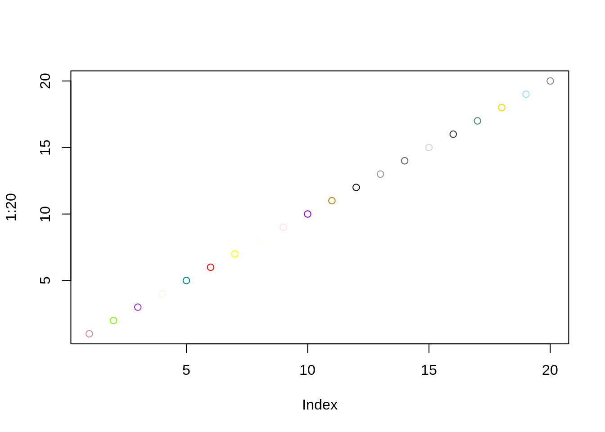

Part 2 Containers
This part will talk about containers
Block of code in R eval=FALSE: do not execute the code echo=TRUE: show the code

Block of code in bash
## /home/linuxbrew/.linuxbrew/bin:/home/linuxbrew/.linuxbrew/sbin:/home/runner/.local/bin:/opt/pipx_bin:/usr/share/rust/.cargo/bin:/home/runner/.config/composer/vendor/bin:/usr/local/.ghcup/bin:/home/runner/.dotnet/tools:/snap/bin:/usr/local/sbin:/usr/local/bin:/usr/sbin:/usr/bin:/sbin:/bin:/usr/games:/usr/local/games:/snap/bin